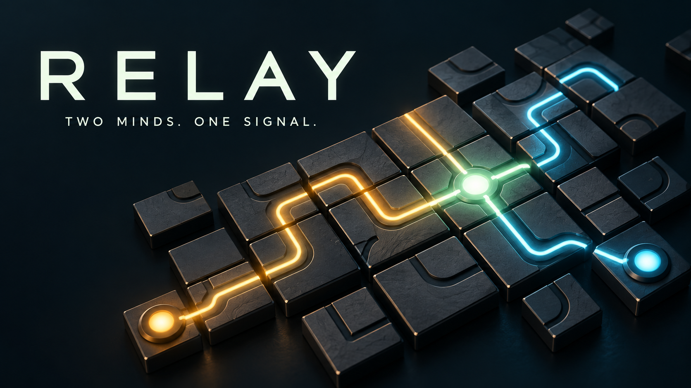
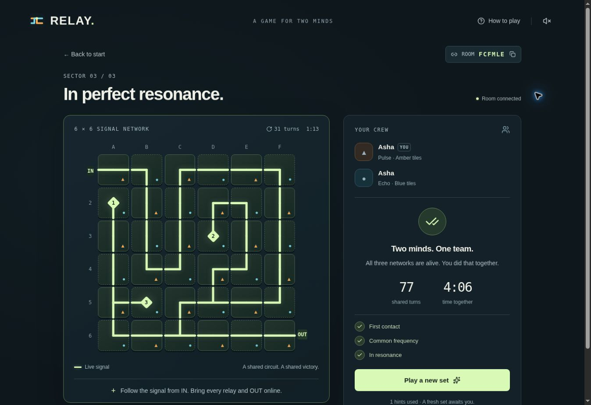

A puzzle for two, wherever you are
Two minds.
One signal.
You own half the circuit. Your partner owns the rest. Find your rhythm and bring the network to life, together.
Two players · Separate devices · No account needed

02players, one shared board
03sectors to bring online
∞patience. No countdown.
A little more in sync
Your part makes
the whole work.
Only you can turn your tiles. Only your partner can turn theirs. Every connection is a conversation.
Make a connection
Create a room and share its link or code with a friend. Both press Ready to begin.
Turn your half
Tap your tiles to rotate clockwise. Pulse controls amber triangles; Echo controls blue circles. Tap a teammate's tile to ping it.
Bring the network online
Carry the signal from IN to every numbered relay and OUT at the same time. Unused wires can stay dark.
A shared circuit. A shared victory.
Connection made.
Three sectors grow from 4×4 to 5×5 to 6×6.
Take your time. You're on the same side.

A little help is built in
Ping a tile, send a quick signal, or ask for a shared hint. Start with solo practice if you want to get a feel for the circuit.
Play in your own way
Use touch, a mouse, or your keyboard. Shapes reinforce colors. Sound is optional, and reduced-motion preferences are respected.
Two people, one room
Each room has two player seats. More friends can start their own rooms and work through a fresh network together.
Ready when you both are
Find your other half.
Open a room. Send the link. Follow the signal.
Let's play